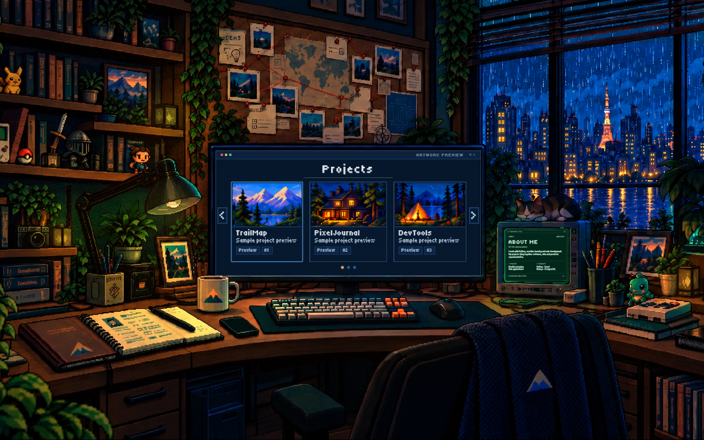
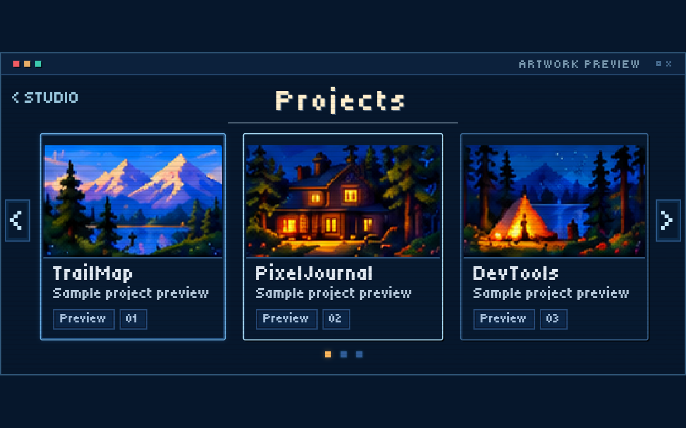
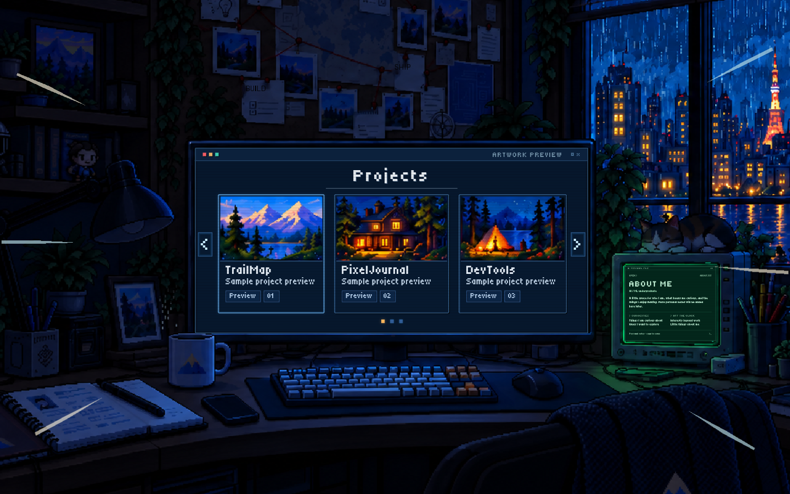
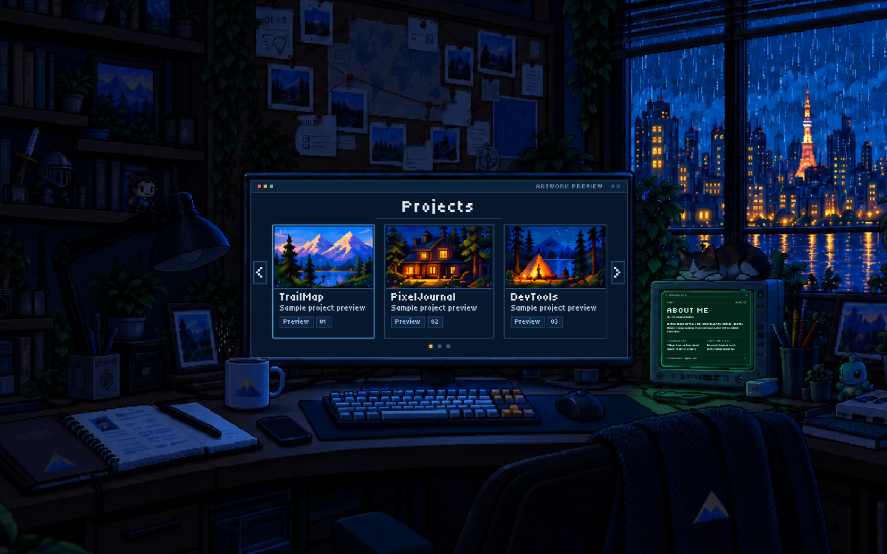
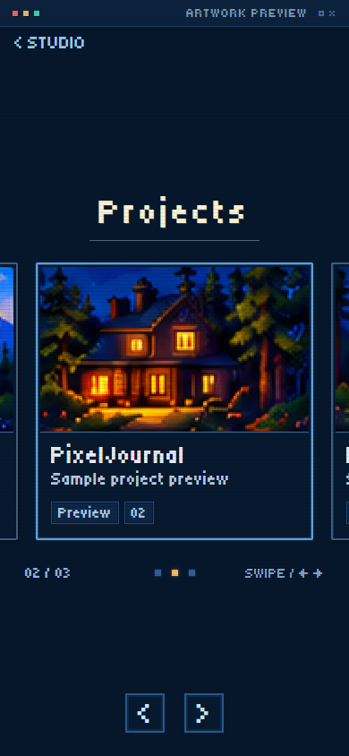

Earlier and updated streak visibility →
About Me monitor: current browser recording and screenshots →
Open the interactive studio. The recording below shows the supplied lamp clip, the new camera entrance, selection, and return at 1440 × 900.




